How to Audit Your Own Website for Improved performance, SEO, User Experience and Conversions
A good SEO audit will also uncover ways to keep your website up-to-date with the latest developments in search marketing and on top of the competition.
What is a Website Audit?
A website audit is a detailed analysis of page performance before undertaking search engine optimisation (SEO) or a website redesign. A good audit gives you an actionable plan that helps to:
Compare your website to competitors and use your findings to your advantage
Identify what changes need to be made (and how to change them)
Get a general overview of SEO performance across your website
Uncover your website’s deficiencies and correct them
Set some expectations for the future of your website
Have you ever given your website a checkup?
If you’ve never completed a site audit, or it’s been over 6 months since you have, it’s time to put an action plan together. Perhaps you’re contemplating a website redesign? Or are keenly interested in knowing how your website works for you?
Use this post as your go-to website audit checklist to make sure your website is setup for best performance, and you won’t look back.
During your audit, there may be fixes, and suggestions that require some assistance from a web developer, or SEO expert. Write them down, and ask around, or ask us!
Website Audit – A very important task
The Benefits of a Website Audit
Before we roll out the checklist, here are some things to keep an eye out for as you’re auditing your website. We split our website audits into three criteria:
Technical SEO & Performance
We’re looking to spot any missed SEO opportunities and fix any misguided or poorly implemented SEO practises throughout your website. This will allow you to focus on what we believe is most important, the user. Sticking to white-hat SEO will safeguard you from ever-changing search engine algorithms. Long gone are the days of techniques such as keyword stuffing, SEO is a much broader playing field nowadays, and requires you to focus on user experience much more. Metrics such as loading times, time spent on page, and social sharing are all contributing factors to rankings.
Content & User Experience
Which pages generate the most traffic and convert the most users? Which pages have the highest bounce rate? Potential search optimisation opportunities? The pages that are ranking best and worst? Pain points that can be quickly fixed? These are all things that can help with rankings, and more importantly, provide the best possible experience for your audience.
Effectiveness
A websites effectiveness can be a broad term, but, we’re looking for signs that help us improve the effectiveness of our website as a tool to deliver the goals we want to achieve. Are your goals being tracked, and are they working effectively? Are your landing pages converting? Is the website easy to use? We can extract some information from an audit to help us answer those questions
The Website Audit Checklist
Before we show you how to begin crawling your website for issues, let’s start with an initial URL check, and make sure that only one version of your website is browseable.
People can type your website address out (or link to it) in various ways, for example:
However, only ONE of these should be accessible in a browser. The others should be 301 redirected to the canonical version. Take our website, for example, no matter which you type out, you end up at https://watb.co.uk
There are various free and paid SEO tools out there to help you work out what’s wrong with your website but for this part of the checklist, we’ll be using SEOptimer. It’s not as comprehensive as something such as SEM Rush, or Ahrefs, but it’s a fantastic starting point. Other audit tools are available!
It’s worth noting SEOptimer is only checking one page at a time, not your whole website, so you’d need to run it for each page, or use a tool that crawls your whole website!
HTML Header
Title Tag – Page titles tell users and search engines the subject of the webpage. They also give search engines an estimation of how relevant a page is to a search query. For this reason, page titles should be as accurate and relevant to the page’s content as possible.
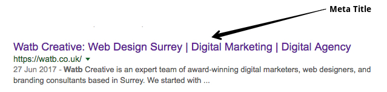
Make sure your title clearly tells the user what your page is about
Meta Description Tag – The same applies for your description, think user first. Keep your description between 70 and 320 characters. If you’re using WordPress, follow this guide to show you how to edit your Meta Titles and Descriptions.
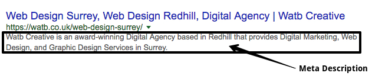
Put together a plan of action, and work on making one small win at a time.
Header Tags – HTML header tags are an important way of signalling to search engines the important content topics of your page, and subsequently the keywords it should rank for. Your main page topic/title should be your H1 tag.
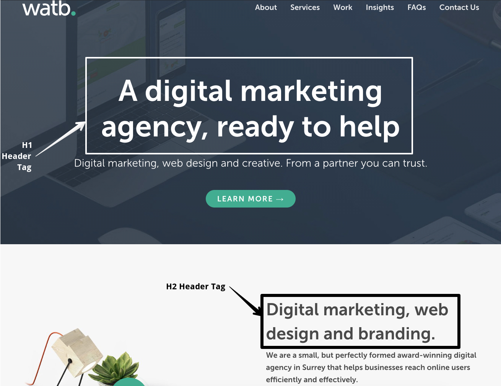
A digital marketing agency, ready to help – this is our main page title, also our H1.
Keyword Consistency – Your content should be focused around particular keywords, usually worked out by completing keyword research. We’re looking for a good spread over our page headings. you would like to rank for. Ideally, these keywords should also be distributed across tags such as the title, meta and header tags. You can see above the phrase ‘Digital Marketing’ is used in our Meta title, description, and our header tags.
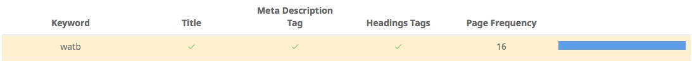
The keyword ‘watb’ is also used across important HTML tags
Amount of Content – With topic-based content, and long-form content being more likely to assist your website in search rankings, you want to make sure you’re not to light on the ground when it comes to textual content. Set yourself a minimum of 1,000 words.
Image Alt Attributes – Alt text describes the appearance and function of an image on a page. There are a few reasons why Alt text is important:
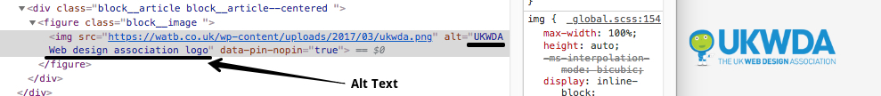
Alt tags – can be added easily via your CMS
Visually impaired users using screen readers will read an alt attribute to better understand an on-page image.
If for some reason your image doesn’t load, your Alt tag will display in place of the broken image.
Alt tags provide better image context to search engines, helping them to index an image accurately.
Links
Number of Backlinks – Backlinks are still a very important metric in search engine rankings, but, it’s about quality over quantity. Look for partnerships, and consider guest writing articles. The more your voice becomes an authority, the more other websites will link to you. It’s also worth checking out what your competition is up to, and see if you can score any wins that way.
On-Page Link Structure – It’s good to have internal and external links. Go through your content and help your users by linking to relevant internal pages or external resources they may find useful.
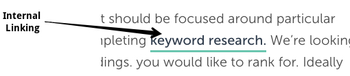
Broken Links – You may have existing links that no longer work or that need redirecting to new pages. Check to see what’s broken, the last thing you want is a user seeing a 404 page. There are three types of broken links:
Internal links: links on your website that link to other pages within your website.
Outbound links: links on your website that link to another website.
Inbound links: links from another website to your website. These are out of your control, so if you notice another website is linking to a page that no longer works, set up a 301 redirect, and drive that traffic to the most relevant page you deem fit.
404 page – awkward
Friendly URLs – We’re looking for URL’s that search engines can gain context from, and humans can easily read.
An unfriendly URL example:
www.yourname.com/page?id=441
A friendly URL example:
www.yourname.com/services/carpet-cleaning
Other
Robots.txt – A robots.txt file is a text file that tells web bots (most often search engines) which pages on your site to crawl. It also tells web bots which pages not to crawl. The quickest way to test this is to type ‘/robots.txt’ after your domain name and see what comes up. There’s a top article here by Neil Patel explaining how to create the perfect robots.txt file.
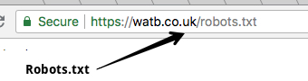
The quickest way to test your robots.txt file!
XML Sitemaps – A sitemap contains a list of your pages that are accessible for crawling, as well as other valuable information for search engines such as when you last updated a page, and priority of pages. If you need to create a sitemap there are a plethora of tools allowing you to do so, here’s one you can try now.
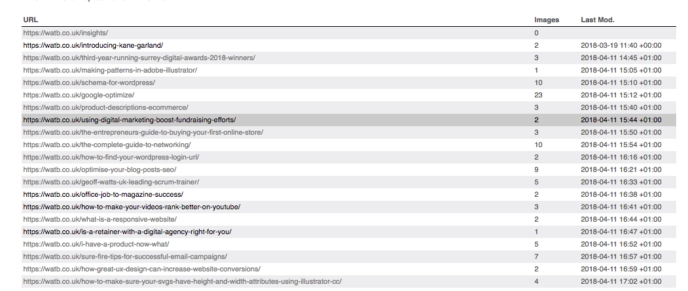
A sitemap looks something like this.
Analytics – It goes without saying, you should be using some form of Analytics tool, the most notable is probably Google Analytics, it’s free to use and easy to set up. If you haven’t already set one up here: Google Analytics
Performance
Page Speed – Page speed has an impact on user experience, it affects bounce rates, and is a factor in search rankings. The average loading time for a web page is 5 seconds, but you want to be aiming for sub 2 seconds if possible.
Server Response Time – Budget hosting leads to slow response times, geolocation can also play a part in response times. If your business is located in the UK and the majority of your customers are also from the UK, it’s best to have a UK based hosting provider. Use a tool such as Pingdom Speed Test to check your response time.
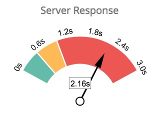
Number of Resources – As a general rule, more files to load increases the number of server requests and can subsequently increase page load time, and your overall site speed. It is a good idea to remove unnecessary files or consolidate files like styles and scripts where possible.
Optimise Images – Correctly formatting and compressing images can have an important impact on page load performance. There are some free tools out there if you don’t have image editing software, such as Kraken.
Minification – Minification is the process of removing all unnecessary characters from code without changing its functionality. Often used to speed up resource loading times.
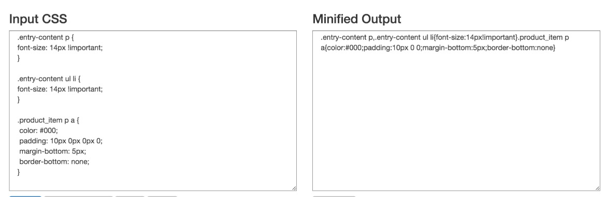
An example of minification
Security
SSL – Having an SSL certificate is no longer really a consideration, it’s a must. With Google introducing favour to websites that are SSL enabled, it’s time to make sure you have a certificate installed. Most hosting companies now support LetsEncrypt which is a free SSL service. WordPress is also edging towards SSL as standard!
Malware Check – You’ll want to make sure your website code hasn’t been compromised, and you’re fully safe.
Email Privacy – It’s good practice to not have any email addresses as plain text throughout your content. If you have to show an email address, try writing it in a format such as ‘info [at] yourname.co.uk’
Our handy Excel / Google sheet includes details on how to check, and fix your website issues!
_____________________
Technical SEO and Performance Summary
Whilst there are plenty more elements throughout a website that can be tested, writing them all out in this article would be overwhelming. We’ve given you a list of things to check for now, which make a great start to auditing your website.
SEO optimisation is essential to maximise your ranking potential and drive traffic to your website from search engines. You can continue to build on your ranking positions through further implementation of Digital Marketingstrategies like content creation and link building.
Content and User Experience
Content and User Experience
Again, there are various free and paid tools out there to help you work out what’s wrong with your website but for this part of the checklist, we’ll be using Google Analytics and SEM Rush. This is a very brief insight into some points you can check yourself, it’s worth bearing in mind that a full audit will cover considerably more points!
Which pages generate the most traffic?
There are multiple metrics to take into account for traffic generation, but the easiest way to find out which pages are generating the most traffic is to load up Google Analytics, and go to Behaviour > Site Content > All Pages – You’ll want to add a secondary dimension too so you can see where the views are coming in from ‘Aquisition > Source’.
In the example below, you can see the majority of our incoming traffic is from Google Search.
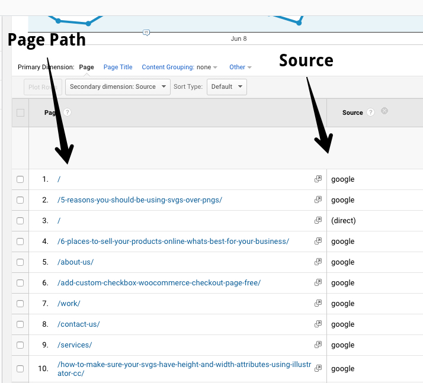
Google Analytics
Which pages have the highest bounce rate?
In the same view, you can check out the bounce rate for your top pages, that’s a good place to start. You’ll find that column over to the right.
A bounce rate is the percentage of visitors to a particular website who navigate away from the site after viewing only one page.
As you can see in our example, our average Bounce Rate is higher than we’d like, but upon closer inspection, it’s the very specific blog articles that seem to have a high bounce rate, which is putting our website average up. This would indicate that we need to consider some changes to keep readers of our blog on our website.
It’s essential for a blogger or SEO professional to check their Google keyword ranking for target keywords. One of the most common blunders bloggers and website owners make is that they write articles without targeting any keywords at all.
We’re gonna fire up SEMrush for this, you can grab yourself a free trial for 14 days, and use some of the tools to help you. In this screenshot, we’re looking at the top pages for SEMrush based on traffic volume. By using these metrics, you can start to see where you can make improvements, and which pages might be easiest to work on.
It’s worth noting, this data is only for desktop, and does not include Mobile – You need to set up a new search for that.
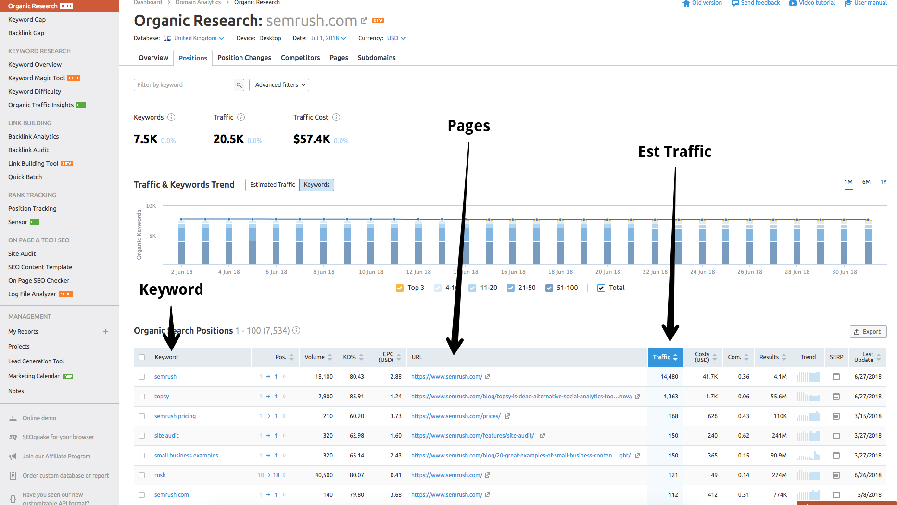
Organic Research for SEMRUSH
Content and User Experience Summary
Whilst there are plenty more elements throughout a website that can be tested, if we included them all we’d have a bible length article on our hands… Maybe one day. We’ve given you a few things to check for now, which make a great start to auditing your website.
Go through your articles one by one, and make sure they’re optimised for the right keywords, and they are of benefit to the user. Look out for where your users are coming from and consider that in your future marketing campaigns.
Is our website doing what it should do? Are we good at lead generation, what’s our conversion rate? These are questions you should be asking. Otherwise, what’s the point of a website?
Are your goals being tracked?
Hopefully, you’ve got goals in place, and you are tracking your conversions. Head over to Google Analytics, and click ‘Conversions > Goals > Overview’. If it’s been set up, you should see some data!
If not, ask your website administrator to sort it asap!
With this data, we can see where people are converting the most, and where they came from. Helping us make an informed decision on what to do next.
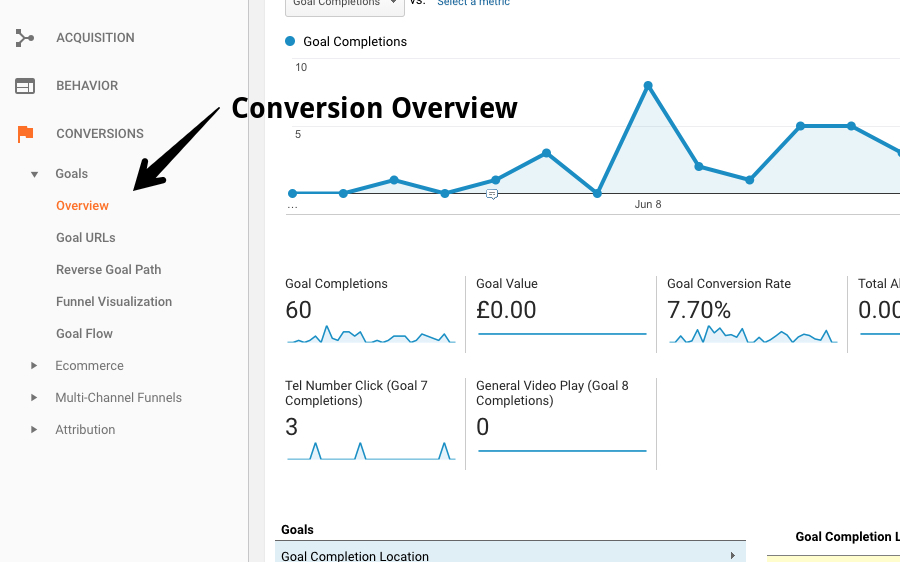
Google Analytics – Conversions
Conversion tracking goes a long way, say you’re looking to advertise on Facebook, you can set up Facebook Pixel (an article we need to write!), and start to build audiences based on their behaviour on your website.
So an example audience could be ‘all Facebook users who have viewed your services pages’, that way when it comes to running a Facebook campaign, we can target those users specifically.
Google Analytic Specifics
We wrote an article for those new to website Analytics, it covers all the basics such as:
How to check website traffic – including page views, unique page views and sessions (and what those words mean!).
How to change the date range in Google Analytics
How to find out the performance of each page of your website
How to find out where your website traffic has come from. Ie, how people found your website.
Focus on your goals, what is it exactly that you want your website to achieve. Put together a plan of action, and work on making one small win at a time. Creating, maintaining and making a website work for you is a long process that requires constant studying, tweaking and trial and error. Stick with it though, as users on your site are already halfway to being a customer!
Website Audit Summary
For now, this is a good place to start. For further investigation, you may want to hire an expert or delve deeper into the world of audits yourself. As mentioned at the start, a good audit should give you the tools to do the following:
Compare your website to competitors and use your findings to your advantage.
Identify what changes need to be made (and how to change them).
Get a general overview of SEO performance across your website.
Uncover your website’s deficiencies and correct them.
Set some expectations for the future of your website.
Stay up to date with the latest marketing, web design, and branding tips and news.
Thanks. Welcome aboard!
Oops! Something went wrong while submitting the form.
By clicking “Accept All Cookies”, you agree to the storing of cookies on your device to enhance site navigation, analyze site usage, and assist in our marketing efforts. View our Privacy Policy for more information.